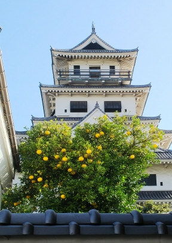

もう４度目の松山の病院への出張なのに、道中、迷いまくってしまいました・・・
何故か徳島の駅前。
右前方に見えるのは、昔、そごうやった建物やん。そういや
徳島も百貨店がなくなったとか言ってたな・・・
昼時やったので、徳島ラーメンでもと、駅から近い有名な店に行って
みましたが、全然おいしくなかったわ・・・
若干すっぱかったけど、もしかして徳島ラーメンって酢入れてる？
徳島から西に行くフェリーがあるというので、バスでフェリー
乗り場へ。
大きいフェリーが泊ってるわ。これに乗ろう！

新門司に行けるみたいやけど、客全然おらんなぁ。。
出航です。

甲板に出てみるけど、ヘリポートがある！
こんなフェリー初めてや。
でも船内にレストランはなく、なんか昔の関西発ブルトレ
みたい・・・
しかし遠回りするなぁ。
のどかでええけど。

太平洋側を運行したけど、それほど揺れず門司に到着。
６：３０やけど、まだ暗いっす。
送迎はバスではなくタクシー。これはええ。
門司駅まで連れて行ってくれました。
って、出張先は松山やで！！
ここまで来たから、もっと西に向かおか。

ＪＲで博多まで行って、地下鉄で天神に移動して西鉄に乗車。
特急の先頭に乗って柳川までの車窓を堪能しました。

柳川からはレンタカーを借りました。
有名なレンタカー会社は高いので、駅から遠いローカルな会
社で借りたけど、道中、西鉄の車庫のそばを通りました。
えっ？車、運転出来んのって？
西鉄で横に座ってた背の高いおじさんと仲良くなって、その
おじさんに運転してもらいましたよ。

そのおじさんが、どうしても行きたいっちゅーので、佐賀線の
廃線にある筑後川昇開橋を見に行きました。
このあと、橋のそばに車を停めて歩いて真ん中まで行ったら係
の人が昇降部分の上げ下げをしてくれました。
係の人が言ってましたが、明治のころ、この河口あたりは造
船でにぎわってたみたいで、尼崎の会社の支店があったらしく
がらの悪い人が来て大変困ったとのことです。

次は旧長崎街道沿いの塩田津という古い街並みへ。
今日は祝日ですよね？と思うほど、人が全くいません。
佐賀県ですが、昼に皿うどん食べました。
会計の時、呼んでも店の人がなかなか出て来ず、どうも同行
のおじさんが「味濃いなぁ！」と嫌味っぽく言ったのが聞こえ
てしもたんやろか・・・
目的地の嬉野温泉に到着！
おじさんに写真撮ってもらいました。
そして土産物屋の勧めるままに、嬉野茶まで購入。
おじさんは、嬉野茶どころか、八女茶の存在すら知らなかったみたいで、会社の同僚からそのことで
いじめられてるみたいです。

最後はおじさんと福岡は天神の屋台で焼ラーメンを食べま
した。
おじさんはこのあたりで働いてるみたいで、最近、地下鉄の
定期が手に入って、用もなく天神に出没してるみたいです。
今までは、天神の態度の悪い店員に難癖つけたりマナーの
悪い通行人をにらみつけたりしてたみたいなんですが、最近
はもしかしたら職場の人から見られてるかもしれないと、用心
して品行方正に過ごしてるとのことです。田舎って、世間が狭
くて大変！

天神から高速バスで小倉に移動。
小倉港から松山フェリーで松山へ。なんとかユーザーに
行ける！

久々に乗ったけど、昔のままやなぁ。


翌朝、無事松山到着。
仕事が終わって、時間があったので、今治にやってきました。
駅前からバスに乗り込みます。
３０分ほどバスに揺られて、鈍川温泉に到着。
バス停から少し歩くと温泉街に到着です。
共同浴場はないので、源泉のある鈍川温泉ホテル
の温泉に行くことに。

源泉はぬるいので加温しているようですが、泉質はめちゃめちゃ良かったっす！

最後は、この秋何度も今治の街には行った
のに、一度も行けなかった今治城へ。
築城名人の藤堂高虎の作った城です。
当然、昭和の再建ですが、これ見たら、藤堂高虎、あまりのちゃちさに
キレるんちゃうか？

最後は、今治桟橋から望む、しまなみ海道です。
桟橋も、すいてて寂しいわ。
このあと、無事に帰宅できました。
しかし日本っていろんな交通手段があるから、迷いやすい
なぁ